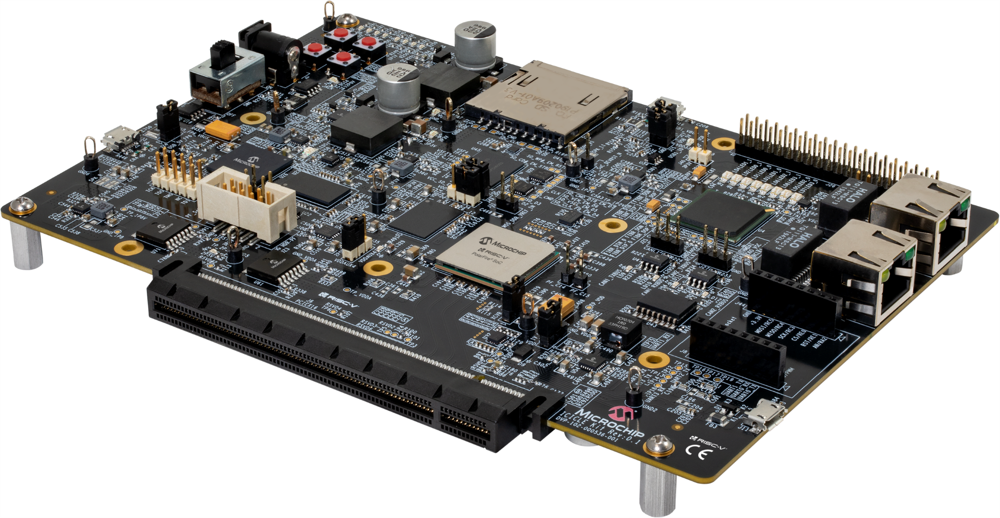

PolarFire SoC Icicle Kit
 |
CPU
PolarFire SoC FPGA (MPFS250T-FCVG484EES)
SiFive E51 Monitor core (1 x RV64IMAC)
SiFive U54 Application cores (4 x RV64GC)
and Secure boot
Memory and storage
2 GB LPDDR4 x 32
1 Gb SPI flash
8 GB eMMC flash & SD card slot (multiplexed)
Programming & Debugging
Onboard JTAG connector or onboard embedded FlashPro (multiplexed)
UART via micro USB
52 x test points
Interfaces
4 x 12.7 Gbps SERDES
PCIe Gen2 Rootport
2 x Gigabit Ethernet
Micro USB 2.0 Hi-Speed OTG
4 x UART (via single micro USB)
2 x CAN
2 x SPI
2 x I²C
Expansion
Raspberry Pi compatible 40-pin header
mikroBUS socket
Sensor
Power sensor (pac1934)
LEDs
There is 4 user controlled on-board LEDs.
Configurations
nsh
Basic configuration to run the NuttShell (nsh).
hwtest —
Configuration to run the NuttShell (nsh) and enabling the peripherals.
The following peripherals are configured: - I2C0 & I2C1 - Ethernet on MAC 1, configured to 1Gbit speed - USB (high speed) + CDCACM - SDCard - SPI0 & SPI1 - UART0-4 - CorePWM (nb. needs the FPGA IP installed to work) - CoreSPI (nb. needs the FPGA IP installed to work) - CAN0 & CAN1 (work with flat mode but there is still rare frame corruption issue in protected mode)
The following applications are available: - TelnetD (at address 10.0.0.2) - tcpblaster & udpblaster - ostest